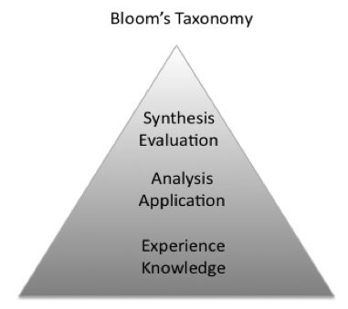

We are familiar with work packs. Going forward work envelopes are more realistic for knowledge workers.
We will take a brief look at the need for and application of knowledge work envelopes.
Cognitive Lead Time is the unforeseen and unmanaged effort that goes into learning and application to deliver value. It causes delays that affect most projects and value realisation. It is compounded when many people are involved.
In order to appreciate cognitive lead time it will help to explain and visualise it.
A quick overview
Lets start where successful teaching stops: the top level of Bloom's taxonomy.
Figure 1 - Blooms Taxonomy

Figure 2 - Scan Design Deliver Value [SDDV] (A commercially aware knowledge worker's version of Plan, Do, Check, Act) Technological advances in music from Moog to software synthesis enables shaping of sounds in envelopes. We can apply a similar technique to work envelopes. We can map the Attack, Sustain, Decay, Release envelope to Scan, Design, Deliver, Value envelopes.
Figure 3.2 - SDDV
Cognitive Lead Time is the area under the red and orange section of the envelope.
This results in work envelopes rather than work packs. It is a truer reflection of many backlogs.
Application to knowledge work
By assessing how much work is needed in the scan and design sections it is possible to make time for the preliminary tasks then confidently commit to delivering value.
Doctors Norman Doidge and Bessel Van Der Kolk, to name two, state that it takes six weeks for neuro-plasticity to take effect and allow people to make changes. Obviously this applies to heavy lift learning more than small scale change. The best teams I worked in had regular look ahead sessions. There are now faster release cycles based on six week periods. In agile terms that is a release every two to three sprints. Of course small updates can be done continuously...as was always the case.
Division of labour between design and delivery can affect team level productivity because learning may need to be done by different people. Again the best teams would have one person train in a topic then share their new knowledge with the other members.
To protect against automation we should use aesthetics to differentiate us from the coming neuro-mimetic machines. We should use our creative powers and hand over the drudge work to silicon sisypheans. This is the acceptable face of slavery.
The mappings below shows instrument type to shape to work envelope. The differentiation between the genres points to different project types. This can be considered as the musical equivalent of shearing as proposed by Frank Duffy then applied to software by Gartner.Past - Orchestral: Opera, Symphony, Overture = Waterfall
| Instrument | Shape | Work Envelope |
|---|---|---|
| Horns | More up front work (tuning), little design then delivery and value is complex as it fades | |
| Strings | More up front work (tuning) medium design then delivery and value is complex as it fades | |
| Woodwind | More up front work (tuning), a lot of design then delivery and value is complex as it fades | |
Present - Pop: Three minute singles or albums = Agile
| Instrument | Shape | Work Envelope |
|---|---|---|
| Drum | This is a simple piece of work and done easily and provides lasting value. It may be an empathetic directive from above. | |
| Bass | Immediate start (too much too soon?), some design, short delivery, low value | |
| Guitar | Has an immediate scan a short period of analysis and then delivery. Value is quickly delivered. | |
Future - Synth: Use the studio as an instrument = Generative
| Instrument | Shape | Work Envelope |
|---|---|---|
| Synth Basic | Cuts through the noise and provides fast value | |
| Synth Lead | Emulate the percussive instruments | Synth Pad | More complex with slow start, design that blends into deliver (a spike?) and delivers rich value | Synth Texture | Slow start, detailed design leading to delivery and processed value that can repeat as it fades |